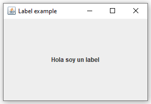
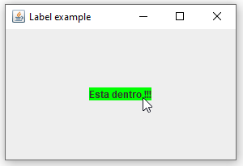

Como crear etiquetas y asignarles una accion al pasar el cursor por encima.
Para crear un JLabel, lo hacemos así:
JLabel label = new JLabel("Hola soy un label");NOTA: Para usar el JLabel tenemos que tener el siguiente import:
import javax.swing.*;
El parametro que le indicamos al crear el JLabel es el texto que mostrará la etiqueta por defecto.
Una vez tenemos creado el label lo introducimos en nuestro contenedor:
contenedor.add(label, gridConstraints);El primer parametro es el componente que vamos a introducir y el segundo las propiedades del GridBagLayout para posicionar el elemento dentro del layout del contenedor.
Un ejemplo para usar getText sería el siguiente:
System.out.println(label.getText());
Un ejemplo para usar setText sería el siguiente:
label.setText("Nuevo texto");El componente JLabel no suele estar asociado a ningun evento (ni siquiera dispone del metoodo addActionListener), ya que su unica funcionalidad es la de mostrar información, pero podemos asignarle un MouseAdapter para hacer que label reaccione cuando pasemos el ratón por encima.
Primero creamos el MouseAdapter y definimos la función mouseEntered, que estará asociada a cuando pasemos el cursor por encima del label y una función mouseExited, que estará asociada a cuando el cursor deje de estár encima del label:
MouseAdapter mouseAction = new MouseAdapter() {
public void mouseEntered(java.awt.event.MouseEvent evt) {
label.setOpaque(true);
label.setText("Esta dentro !!!");
label.setBackground(Color.GREEN);
}
public void mouseExited(java.awt.event.MouseEvent evt) {
label.setText("Cursor fuera del label");
label.setBackground(UIManager.getColor("control"));
}
};NOTA: Para poder crear un MouseAdapter necesitamos el siguiente import:
import java.awt.event.*;
En este caso hacemos que el texto y el fondo del label cambien tanto cuando el ratón pasa por encima como cuando sale de encima del label.
(el label.setOpaque(true) es necesario ya que por defecto no se dibuja ningun fondo para el label, si no se pone esto no se verá el color que le asignemos.)
A continuación asignamos el MouseAdapter que hemos creado al label usando el metodo addMouseListener:
label.addMouseListener(mouseAction);El resultado final al pasar el raton por ecima del label es el siguiente:
El código completo es el siguiente:
import java.awt.*;
import java.awt.event.*;
import javax.swing.*;
public class LabelActionApp extends JFrame{
int clicksNumber = 0;
public LabelActionApp() {
Container contenedor = getContentPane();
contenedor.setLayout(new GridBagLayout());
GridBagConstraints gridConstraints = new GridBagConstraints();
gridConstraints.gridx = 0;
gridConstraints.gridy = 0;
gridConstraints.weightx = 1.0;
gridConstraints.weighty = 1.0;
gridConstraints.insets = new Insets(10, 10, 10, 10);
JLabel label = new JLabel("Hola soy un label");
contenedor.add(label, gridConstraints);
MouseAdapter mouseAction = new MouseAdapter() {
public void mouseEntered(java.awt.event.MouseEvent evt) {
label.setOpaque(true);
label.setText("Esta dentro !!!");
label.setBackground(Color.GREEN);
}
public void mouseExited(java.awt.event.MouseEvent evt) {
label.setText("Cursor fuera del label");
label.setBackground(UIManager.getColor("control"));
}
};
label.addMouseListener(mouseAction);
pack();
setVisible(true);
setResizable(true);
setSize(300, 200);
setTitle("Label example");
setDefaultCloseOperation(EXIT_ON_CLOSE);
}
public static void main(String[] args) {
new LabelActionApp();
}
}Java | Swing | JLabel